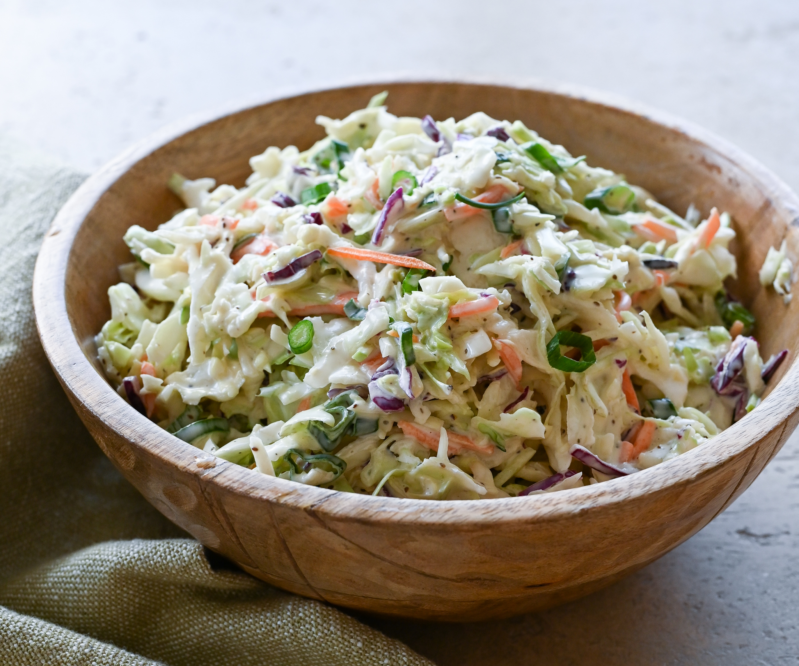

Coleslaw

Description
A creamy coleslaw dressing that can be made with ingredients you already have! You can pour it immediately over a 14-ounce package of coleslaw mix or refrigerate until needed.
ingredients
- Mayonnaise
- Sugar
- Lemon juic
- Vinegar
- Salt
Steps
- Gather all ingredients.
- Whisk mayonnaise, sugar, lemon juice, vinegar, pepper, and salt together in a bowl until smooth and creamy.
- Store in an airtight container.